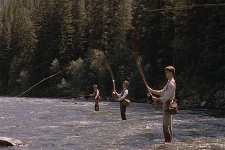

Bryant Caruthers

About Me
I am a web developer, veteran, and emergency communications officer that lives in Nampa, Idaho. I am originally from the small town of Oak Ridge, North Carolina. I served in the Marine Corps as a Combat Engineer and in the Navy as an Aviation Ordnanceman. I have been married for 16 years. We have three dogs and two cats.

I enjoy fishing. There is nothing greater than being out on the water
surrounded by nature. I recently took up fly fishing. It has been an
extremely challenging and expensive new hobby. It definely takes a lot
of patience, but is rewarding by helping you to clear your mind.
I also enjoy listening to metal music.I listen mostly to sludge, folk metal, doom/stoner metal, speed metal, and thrash metal. I also enjoy playing video games, watching MMA fights, and reading.